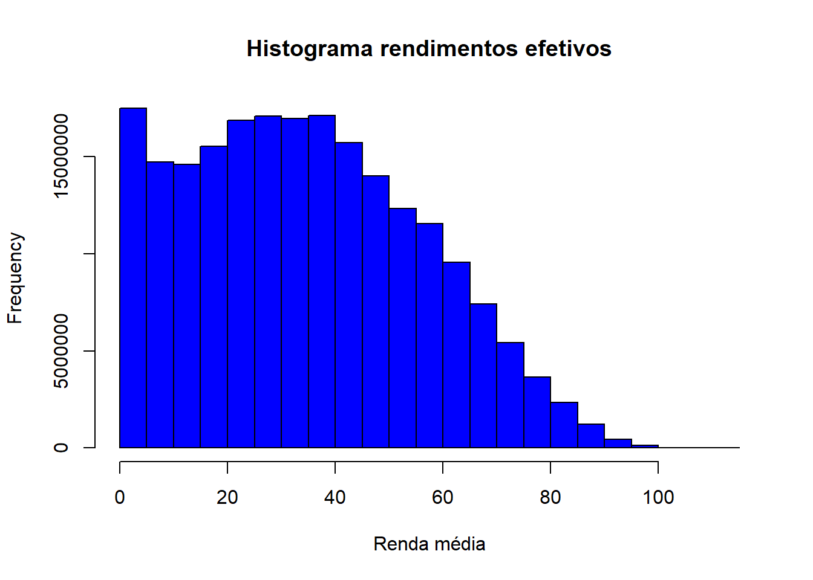

if(!require(PNADcIBGE)){install.packages("PNADcIBGE")}; library(PNADcIBGE)Acessando dados da PNADC disponíveis no site do IBGE com o pacote PNADcIBGE
Tutorial PNADcIBGE
IBGE
r
PNADc
dados
A PNAD Contínua nvestiga as características econômicas e sociais da população, principalmente aquelas relacionadas ao mercado de trabalho
Este artigo foi reescrito em Domingo, 12 de Abril de 2024.
Tutorial PNADcIBGE
Este tutorial destina-se a auxiliar pesquisadores, analistas de dados e outros interessados em acessar os dados da PNAD Contínua utilizando a linguagem de programação estatística R.
Por que utilizaro R e o pacote PNADcIBGE?
O R é um software poderoso e gratuito.
Possui código aberto.
Grande variedade de métodos e pacotes.
Atualização simples e rápida.
Além disso é capaz de considerar o plano amostral da Pnad Contínua para realizar as análises corretamete.
O pacote PNADcIBGE é um pacote oficial do IBGE.
Possui funções que auxilia na hora de baixar e analisar os dados.
Possui um manual desenvolvido pelo Gabriel Henrique Oliveira Assunção (IBGE/DPE/COREN/GEMC) que está disponível para a acesso na internet. Clique aqui para acessar o manual.
Para acessar e analisar os dados precisamos instalar e carregar alguns pacotes:
PNADcIBGE permite baixar e preparar os microdados da PNAD Contínua para análise
survey pacote que permite análise e modelagem de dados provenientes de pesquisas com amostras complexas
if(!require(survey)){install.packages("survey", dependencies = T)}; library(survey)convey pacote para análise de concentração de renda para amostras complexas
if(!require(convey)){install.packages("convey", dependencies = T)}; library(convey)srvyr pacote que permite considerar o desenho amostral de um survey ao trabalhar com a gramática do dplyr: srvyr.
if(!require(srvyr)){install.packages("srvyr", dependencies = T)}; library(srvyr)tidyverse O pacote tidyverse é uma coleção de pacotes R projetados para tornar a análise de dados mais fácil e eficiente. Ele inclui uma série de pacotes, cada um com funcionalidades específicas, mas todos compartilhando uma filosofia comum de organização e manipulação de dados.
if(!require(tidyverse)){install.packages("tidyverse", dependencies = T)}; library(tidyverse)Baixando os dados da PNADc
- Definindo as variáveis que serão utilizadas. Lembre-se de que este é apenas um exemplo; você pode explorar outras variáveis disponíveis.
VD3005 = Anos de Estudo
V2009 = Idade
V2007 = Sexo
VD4020 = Rendimento mensal efetivo de todos os trabalhos para pessoas de 14 anos ou mais de idade (apenas para pessoas que receberam em dinheiro, produtos ou mercadorias em qualquer trabalho)
UF = Unidade da Federação
V2010 = Cor/Raça
V2001 = Número de pessoas no domicílio
VD4035 = Horas efetivamente trabalhadas na semana de referência em todos os trabalhos para pessoas de 14 anos ou mais de idade
V3007 = Já concluiu ou não a graduação
variaveis <- c('VD3005','V2009','V2007',"VD4020",'UF', "V2010", "VD4035", "V3007", "V2001")
options(scipen= 999 )- Realizando o download dos dados da PNAD Contínua do ano de 2022 para a 1ª entrevista. Para mais informações sobre como utilizar o pacote, acesse
Além dos argumentos year e quarter, que indicam, respectivamente, o ano e o trimestre dos microdados a serem baixados, a função get_pnadc possui outros quatro argumentos que podem ser ajustados durante o download:
design: Um argumento lógico que indica se a função deve retornar um objeto de plano amostral para análise com o pacote survey. Mantenha esta opção como TRUE para garantir análises corretas;vars: Este argumento recebe um vetor de caracteres com o nome das variáveis a serem baixadas. Se nenhum nome de variável for especificado, todas as variáveis disponíveis na pesquisa serão baixadas. É útil quando você precisa trabalhar apenas com algumas variáveis específicas, reduzindo o espaço ocupado na memória do computador;labels: Um argumento lógico que indica se os níveis das variáveis categóricas devem ser rotulados de acordo com o dicionário da pesquisa. Por padrão, os níveis são rotulados.
dados_PNADc <- get_pnadc(vars = variaveis, year=2022, interview = 1)- Dando uma olhada classe do objeto baixado
class(dados_PNADc)[1] "svyrep.design"- Transformando a classe svyrep.design em tbl_svy
dados_PNADc_srvyr <- as_survey(dados_PNADc)
class(dados_PNADc_srvyr)[1] "tbl_svy" "svyrep.design"Tratando o dados
- Agora que fizemos a transformação podemos alterar o nome das variáveis usando a gramática do dplyr: srvyr.
dados_PNADc_srvyr <- dados_PNADc_srvyr |>
rename("Anos_de_Estudo" = VD3005,
"Renda_Media" = VD4020,
"Idade" = V2009,
"Sexo" = V2007,
"Cor_Raca" = V2010,
"Unidade_da_Federacao" = UF,
"Horas_Trabalhadas" = VD4035,
"Num_pesoas_dom" = V2001,
"Concluiu_ou_nao_graduacao" = V3007)- Criando variável Região
dados_PNADc_srvyr <- dados_PNADc_srvyr |>
transform(
Regiao = case_when(
Unidade_da_Federacao %in% c("Rondônia", "Acre", "Amazonas", "Roraima", "Pará", "Amapá", "Tocantins") ~ "Norte",
Unidade_da_Federacao %in% c("Maranhão", "Piauí", "Ceará", "Rio Grande do Norte", "Paraíba", "Pernambuco", "Alagoas", "Sergipe", "Bahia") ~ "Nordeste",
Unidade_da_Federacao %in% c("Minas Gerais", "Espírito Santo", "Rio de Janeiro", "São Paulo") ~ "Sudeste",
Unidade_da_Federacao %in% c("Paraná", "Santa Catarina", "Rio Grande do Sul") ~ "Sul",
TRUE ~ "Centro-Oeste"))Análise descritiva de dados
Estimando a quantidade de homens e mulheres
Sexo <- dados_PNADc_srvyr |>
group_by(Sexo) |>
summarise(n = survey_total(na.rm=T))
Sexo |>
knitr::kable(col.names = c("Sexo", "N", "Erro Amostral"))| Sexo | N | Erro Amostral |
|---|---|---|
| Homem | 104660652 | 0.0178035 |
| Mulher | 109492989 | 0.0130509 |
Podemos melhorar a visualização das estimativas de Sexo, que indicavam 105.595.187 homens e 110.528.146 mulheres, usando um gráfico de pizza para destacar essas proporções.
# Calcular proporções
Sexo$proporcao <- Sexo$n / sum(Sexo$n) * 100
ggplot(Sexo, aes(x = "", y = n, fill = Sexo)) +
geom_bar(width = 1, stat = "identity") +
geom_text(aes(label = paste0(round(proporcao), "%")),
position = position_stack(vjust = 0.5)) +
coord_polar(theta = "y") +
labs(title = "Distribuição por Sexo") +
theme_minimal() +
theme(axis.text.x = element_blank(),
axis.title.x = element_blank()) Concluiu_ou_nao_graduacao <- dados_PNADc_srvyr |>
group_by(Concluiu_ou_nao_graduacao) |>
summarise(n = survey_total(na.rm=T))
Concluiu_ou_nao_graduacao <- Concluiu_ou_nao_graduacao |>
drop_na()# Calcular proporções
Concluiu_ou_nao_graduacao$proporcao_grad <- Concluiu_ou_nao_graduacao$n / sum(Concluiu_ou_nao_graduacao$n) * 100
ggplot(Concluiu_ou_nao_graduacao, aes(x = "", y = n, fill = Concluiu_ou_nao_graduacao)) +
geom_bar(width = 1, stat = "identity") +
geom_text(aes(label = paste0(round(proporcao_grad), "%")),
position = position_stack(vjust = 0.5)) +
coord_polar(theta = "y") +
labs(title = "Distribuição por Concluinte ou não da graduação") +
theme_minimal() +
theme(axis.text.x = element_blank(),
axis.title.x = element_blank())Número de Pessoas por Cor Raça
Cor_Raca <- dados_PNADc_srvyr |>
group_by(Cor_Raca) |>
summarise(n = survey_total(na.rm=T))
Cor_Raca |>
knitr::kable(col.names = c("Cor/Raça", "N", "Erro Amostral"))| Cor/Raça | N | Erro Amostral |
|---|---|---|
| Branca | 91626405.60 | 444335.94 |
| Preta | 22663392.29 | 259799.55 |
| Amarela | 1740263.44 | 87013.00 |
| Parda | 97088333.39 | 421042.96 |
| Indígena | 951366.20 | 45396.02 |
| Ignorado | 83880.12 | 17573.45 |
Gráfico de Barras
ggplot(Cor_Raca, aes(x = Cor_Raca, y = n, label = round(n))) +
geom_col(fill = "blue") +
geom_text(size = 3, position = position_stack(vjust = 0.5), color = "black") +
xlab("") +
ylab("") +
labs(title = "Distribuição por Cor/Raça") +
theme_minimal()Histograma de idades
svyhist(formula=~as.numeric(V2009),
design=dados_PNADc,
freq=TRUE,
main="Histograma Idade",
xlab="Distribuição da Idade",
col = "blue")Distribuição rendimentos efetivos
svyhist(formula = ~as.numeric(V2009),
design = dados_PNADc,
freq = TRUE,
main = "Histograma rendimentos efetivos",
xlab = "Renda média",
col = "blue")
svyhist(formula = ~as.numeric(V2001),
design = dados_PNADc,
freq = TRUE,
main = "Histograma número de pessoas no domicílio",
xlab = "Número de Pessoas",
col = "blue")svyboxplot(formula=VD4020~V2007, design=dados_PNADc, all.outliers=TRUE, main="Boxplot da Idade por sexo")svyboxplot(formula=VD4020~V2007, design=dados_PNADc, all.outliers=TRUE, main="Boxplot da rendimentos efetivos por sexo")Rendimentos efetivos por concluintes ou não da graduação
svyboxplot(formula=VD4020~V3007, design=dados_PNADc, all.outliers=TRUE, main="Boxplot da rendimentos efetivos por concluintes ou não da graduação")Distribuição dos anos de estudo
svyhist(formula=~as.numeric(VD3005), design=dados_PNADc, freq=TRUE, main="Histograma Anos de Estudo", xlab="Anos de Estudo", col = "blue")Testes de Hipóteses
Teste-t para diferenças de médias de rendimentos efetivos entre sexos
svyttest(formula=VD4020~V2007, design=dados_PNADc)
Design-based t-test
data: VD4020 ~ V2007
t = -20.816, df = 198, p-value < 0.00000000000000022
alternative hypothesis: true difference in mean is not equal to 0
95 percent confidence interval:
-688.1337 -569.0330
sample estimates:
difference in mean
-628.5834 Teste-t para diferenças de médias de rendimentos efetivos entre quem concluiu ou não a graduação
svyttest(formula=as.numeric(VD4035)~V3007, design=dados_PNADc)
Design-based t-test
data: as.numeric(VD4035) ~ V3007
t = -2.8405, df = 198, p-value = 0.004975
alternative hypothesis: true difference in mean is not equal to 0
95 percent confidence interval:
-2.8698474 -0.5179148
sample estimates:
difference in mean
-1.693881 Regressão Linear
mod <- svyglm(formula = VD4035 ~ V3007 + V2010, design = dados_PNADc)
summary(mod)
Call:
svyglm(formula = VD4035 ~ V3007 + V2010, design = dados_PNADc)
Survey design:
svrepdesign.default(data = data_pnadc, weight = ~V1032, type = "bootstrap",
repweights = "V1032[0-9]+", mse = TRUE, replicates = length(sprintf("V1032%03d",
seq(1:200))), df = length(sprintf("V1032%03d", seq(1:200))))
Coefficients:
Estimate Std. Error t value Pr(>|t|)
(Intercept) 38.1318 0.5898 64.648 < 0.0000000000000002 ***
V3007Não -1.7193 0.5553 -3.096 0.00225 **
V2010Preta 0.4499 0.5901 0.762 0.44677
V2010Amarela 1.7782 2.2502 0.790 0.43036
V2010Parda 0.3756 0.3996 0.940 0.34841
V2010Indígena 5.8057 3.2301 1.797 0.07384 .
V2010Ignorado -23.0088 8.9240 -2.578 0.01067 *
---
Signif. codes: 0 '***' 0.001 '**' 0.01 '*' 0.05 '.' 0.1 ' ' 1
(Dispersion parameter for gaussian family taken to be 204.6414)
Number of Fisher Scoring iterations: 2